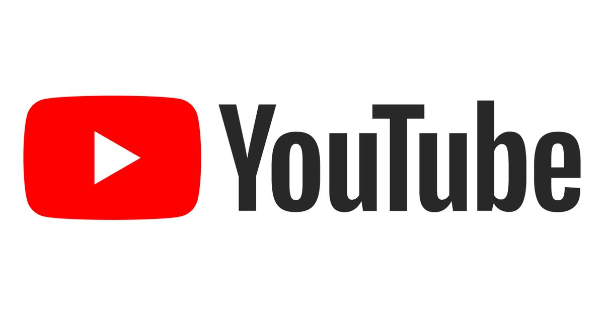

Serwisy video
Serwisy video zapewne każdy z nas wykorzystuje na co dzień. Jednak nie zastanawiamy się, jak i z czego się one zrodziły. Zatem przybliżmy ich historię.
Pierwszym oczywiście serwisem tego typu jest YouTube. Został założony przez Chada Hurleya, Steve’a Chena i Jaweda Karima, którzy byli wcześniej pracownikami przedsiębiorstwa PayPal. Hurley studiował na Indiana University of Pennsylvania. Chen i Karim studiowali informatykę na University of Illinois at Urbana-Champaign. Nazwa domeny youtube.com została aktywowana 14 lutego 2005, witryna była rozwijana przez kolejne miesiące. Twórcy udostępnili publicznie pierwszą wersję serwisu w maju 2005, sześć miesięcy przed oficjalnym debiutem YouTube. Podobnie jak wiele innych technologicznych start-upów, YouTube wystartowało za sprawą tzw. anioła biznesu, mając jedynie prowizoryczne biuro w garażu. W listopadzie 2005 przedsiębiorstwo venture capital Sequoia Capital zainwestowało w YouTube 3,5 miliona dolarów amerykańskich. Dodatkowo Roelof Botha – partner przedsiębiorstwa i dawny Chief Financial Officer przedsiębiorstwa PayPal – dołączył do zarządu przedsiębiorstwa YouTube LLC. W kwietniu 2006 Sequoia Capital wniosła 8 milionów dolarów do spółki, która przeżyła ogromny wzrost popularności w ciągu kilku pierwszych miesięcy działalności.
Aktualne logo youtube
Pierwszym filmem opublikowanym w serwisie YouTube był Me at the zoo użytkownika jawed, właściwie Jawed Karim[9]. Film został załadowany 23 kwietnia 2005 o 20:27.
W czasie lata 2006 YouTube był jedną z najszybciej rosnących witryn internetowych i stał się 5. najbardziej popularną stroną w rankingu Alexa Internet. Według badania z 16 lipca 2006 na YouTube oglądano 100 milionów filmów dziennie, a 65 tys. nowych filmów umieszczano na serwisie w ciągu doby. Witryna miała średnio prawie 20 milionów odwiedzających miesięcznie.
9 października 2006 ogłoszono, że przedsiębiorstwo może zostać kupione przez Google za 1,65 miliarda dolarów z kapitałem akcyjnym. Umowa zakupu pomiędzy Google i YouTube została zawarta po tym, jak YouTube przedstawił ugody z trzema przedsiębiorstwami medialnymi, unikając prawnych konsekwencji naruszania praw autorskich. Umowa została zawarta 13 listopada i była wówczas największą co do wielkości transakcją przedsiębiorstwa Google.
Oczywiście istnieje wiele innych serwisów wideo, lecz youtube jest ich przewodnikiem i dlatego jego historię przybliżyliśmy aby oddać fenomen wykorzystywania internetu do publikacji flimów.